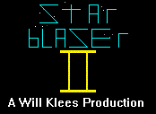

Starblazer II News Place

Welcome to the Starblazer II News Place! The latest news on Starblazer II can be found here. The current news will always be found at the top of this page (right here), while links to each successive update will be found below.
11-14-22 Update
Development on Starblazer II has officially commenced! Ideas for the game have been tossed around since April, with development starting and then tapering off in August, but a team for Starblazer II has finally been formed! This game is no small departure from the original, being a 32-bit game designed for a 486 or better with local bus graphics, joystick or mouse, CD-ROM, and SoundBlaster.
Above is extremely early footage of the gameplay, compiled using the Open Watcom compiler, which is tentatively in use. Obviously, the graphics are extremely rudimentary, but the basic starfield, laser bolts, and enemies (which are explodable) can be seen in our sprite scaling style. A preliminary HUD is also present, showing off the cockpit of your FX-1 starfighter, which is flown throughout most of the game.
To finish off the article, here’s a GIF of our full-motion-video engine in action. That’s right, Starblazer II will feature FMV cutscenes to advance the story! Back in late June, I wrote a simple and performant FMV codec that supports 160x100 15FPS 256-color video within the data rate of a single-speed CD-ROM, and that codec will be in use for Starblazer II. Speaking of, the Starblazer II CD-ROM will also include a rewrite of the original Starblazer, utilizing the seldom-used 160x200 16-color VGA mode.
We’ll try to push out frequent updates on the development process, but please bear with us as this is a massive development project that we are embarking on. It’s a huge effort, but we’ll try to be transparent throughout. Development updates may be as little as a brief text blurb and a screenshot or two, or as much as a small trailer. We also hope to have playable demos for major development milestones. See you at the next update!
- The Starblazer II Development Team